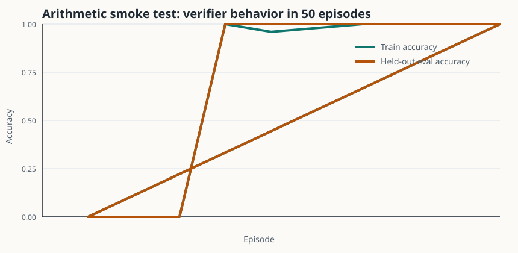

Verifier-first rewards
Rewards return pass/fail status, reason codes, and diagnostic metadata for debugging.
Verifiable-reward RL for text agents
A compact open-source lab for post-training workflows: environments, rollouts, structured verifiers, policy-gradient training, evals, logs, and reward-hacking checks.
The default task is intentionally simple, but the engineering shape is the important part: train and eval splits, machine-readable verifier outcomes, reproducible run artifacts, and checks for reward bugs before trusting the learning curve.
Rewards return pass/fail status, reason codes, and diagnostic metadata for debugging.
Tasks, actions, logprobs, rewards, and failure reasons are collected as typed transitions.
Greedy evaluation on train and held-out splits keeps sample-time training separate from measurement.
JSONL metrics, config snapshots, summaries, and reward-hacking probes are local and inspectable.
The baseline trainer runs with the Python standard library so reviewers can execute it immediately.
The policy can be swapped for a PyTorch or language-model backend without changing envs and evals.
VeriGrad RL keeps the boundaries explicit: environments generate tasks, policies produce text, verifiers score behavior, trainers update policies, and monitors check whether the reward itself is trustworthy.


A 50-episode smoke run reaches exact verifier behavior on both train and held-out arithmetic tasks.
python3 -m verigrad_rl.cli train --episodes 50 --eval-every 25 --run-dir runs/demo
python3 -m verigrad_rl.cli eval --checkpoint runs/demo/policy.json --tasks 100
python3 -m unittest discover -s tests
The notebook gives a GitHub-renderable tour with figures, reproducible commands, and the core training flow.